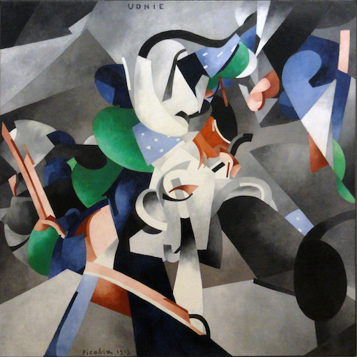
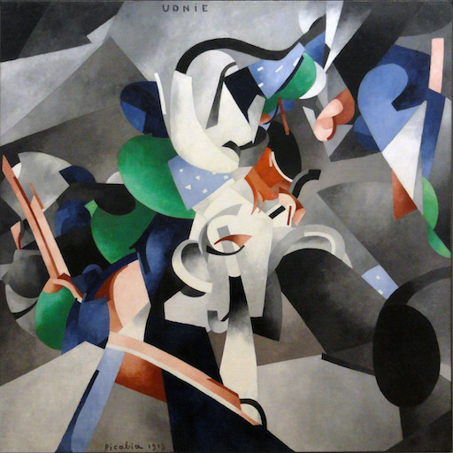

Due to the omnipresence of Neural Radiance Fields (NeRFs), the interest towards editable implicit 3D representations has surged over the last years. However, editing implicit or hybrid representations as used for NeRFs is difficult due to the entanglement of appearance and geometry encoded in the model parameters. Despite these challenges, recent research has shown first promising steps towards photorealistic and non-photorealistic appearance edits. The main open issues of related work include limited interactivity, a lack of support for local edits and large memory requirements, rendering them less useful in practice.
We address these limitations with LAENeRF, a unified framework for photorealistic and non-photorealistic appearance editing of NeRFs. To tackle local editing, we leverage a voxel grid as starting point for region selection. We learn a mapping from expected ray terminations to final output color, which can optionally be supervised by a style loss, resulting in a framework which can perform photorealistic and non-photorealistic appearance editing of selected regions. Relying on a single point per ray for our mapping, we limit memory requirements and enable fast optimization. To guarantee interactivity, we compose the output color using a set of learned, modifiable base colors, composed with additive layer mixing.
Compared to concurrent work, LAENeRF enables recoloring and stylization while keeping processing time low. Furthermore, we demonstrate that our approach surpasses baseline methods both quantitatively and qualitatively.
LAENeRF is a versatile method, allowing for various appearance edits. In the examples below, you can adjust the scene, the style image and the color. To sync the gifs (if necessary), re-click the color or style image.
 


LAENeRF permits recoloring of stylized content, relying on a palette-based decomposition.

Here, we compare our method to previous work on local recoloring and stylization. The ground truth image represent a non-recolored image from the test set.
Our method outperforms previous work for local recoloring. We compare our method to PaletteNeRF [Kuang22] with and without semantic guidance. LAENeRF introduces fewer background artefacts whilst recoloring the selected region faithfully.
By providing a style loss to LAENeRF, our method can stylize arbitrary selected regions. Our method introduces fewer background artefacts compared to Ref-NPR [Zhang22] whilst stylizing the selected region faithfully.
If you find our work useful, consider using a citation.
@inproceedings{radl2024laenerf,
author = {Radl, Lukas and Steiner, Michael and Kurz, Andreas and Steinberger, Markus},
title = {{LAENeRF: Local Appearance Editing for Neural Radiance Fields}},
booktitle = {Proceedings of the IEEE/CVF Conference on Computer Vision and Pattern Recognition (CVPR)},
year = {2024},
}[Kuang22] Kuang, Z., Luan, F., Bi, S., Shu, Z., Wetzstein, G., Sunkavalli, K. 2022. PaletteNeRF: Palette-based Appearance Editing of Neural Radiance Fields.
[Zhang22] Zhang, Y., He, Z., Xing, J., Yao, X., Jia, J. 2022. Ref-NPR: Reference-Based Non-Photorealistic Radiance Fields for Controllable Scene Stylization.